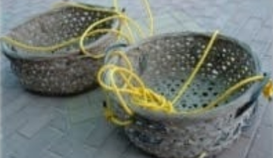
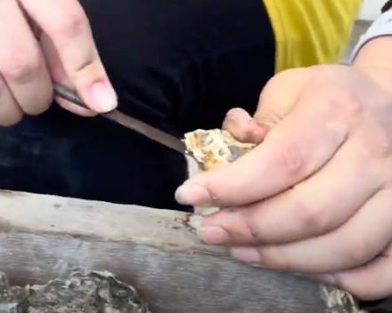

採蚵工具
1.尖嘴
用於將蚵嘟石板植入於蚵田上時,將潮間帶的泥土挖開的一種工具。

2.蚵鏟
是用一段約五十公分長、三公分直徑組的鐵杵鍛打而成的,前端呈扁平狀約估整支鐵杵的三分之一,其餘三分之二保持圓狀作為握柄。擎蚵時,將石蚵從蚵嘟石上鏟下的鐵杵,稱為「蚵鏟」。

3.扁擔
將竹劈成兩半選其中一半,以兩邊承掛重物。也有將兩端削成向上的勾狀的扁擔,勾狀是防止掛在上面的繩子滑落。
4.蚵籃
是用來盛裝從從蚵嘟石鏟下來已將泥土飄洗乾淨的石蚵的竹籃,稱為「蚵籃」。
5.洗蚵籃
蚵民剛從蚵嘟石上鏟下來的蚵,蚵殼的表面上還帶有些評的泥土,蚵民就會在附近的潮池清洗,使用一種鐵絲編織成,型似畚斗的工具。
6.推蚵車
是蚵民用民用來戰擎蚵的相關工具及採收的蚵,再以人力推手推車返家,或是動剖蚵後的蚵殼到集中的丟棄地點時使用。

養殖工法
1.倒石
農曆3月藉著潮水清洗附著在蚵嘟石表面的附著物與曝曬殺菌，以利後續附苗。通常為20條一組，須先將石條刮乾淨，圖片為示範用途，部分石條還有殘留生物。

2.車石
農曆3月與4月適合蚵仔附著，依序由低潮線往中高潮線車石（早期有夏秋2苗）。將置於蚵田中之蚵石疊成如圖的疊法，一般為20條一隴，圖片為示範用途，部分石條還有殘留生物。

3.豎石
農曆6至7月將已附著蚵苗的石條筆直插入沙土中，每塊石蚵條間隔約50公分，以利蚵苗生長，順水流方向插入，減少阻力。一般雙人搭配，一人負責挖土，另一人則看準時機將石蚵條插入沙土中。
4.擎蚵（收成）
農曆8月至隔年4月，須卸除乾淨方能讓蚵苗附著後再重回第一步驟。利用兩個乾净的石條擺成T字形，作為平台使用，然後將目標石蚵條以相對於平台30度角，將石蚵鏟除下來。

剝蚵工具
蚵桌+蚵刀
蚵桌桌面是用木板拼接接成的一個四邊高、中間凹的長方形桌面,凹的桌面方便堆放未剖設的蚵,四邊高出的橫木則作為破殼挖出蚵體的墊板

剝蚵流程
剝蚵刀握法
剝蚵刀的握法像圖中所示，將握柄握在手掌中然後伸出食指靠近刀尖處。
第一步
將刀尖插入石蚵的尾部（如圖所示）然後轉動直至開始“漏水”
第二步
順著邊邊的縫隙刮（如圖所示）直至平面的蚵殼脫落。
第三步
如圖利用刀尖平面處將蚵仔黏著殼壁的筋割斷然後使用食指輔助撈出來放進容器中。

VIDEO